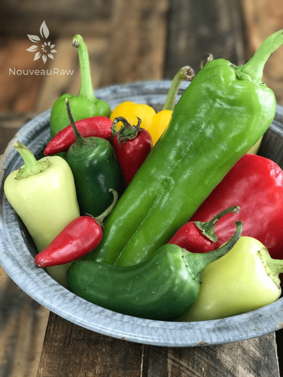
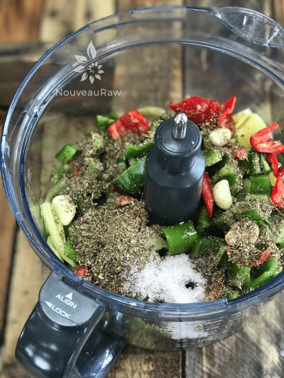
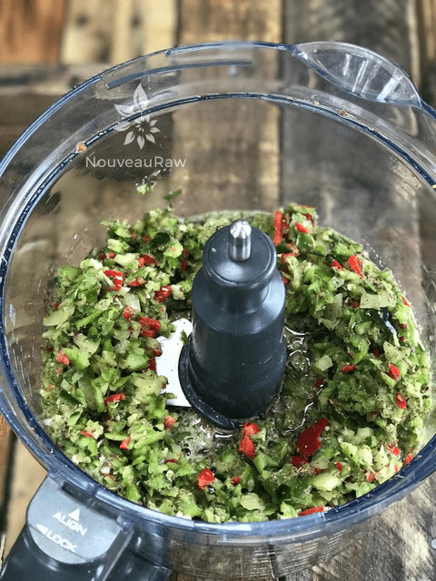
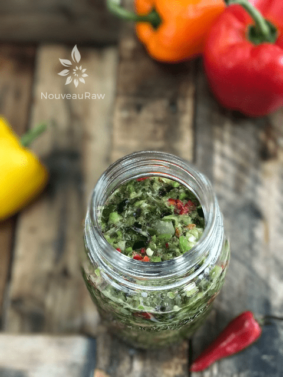
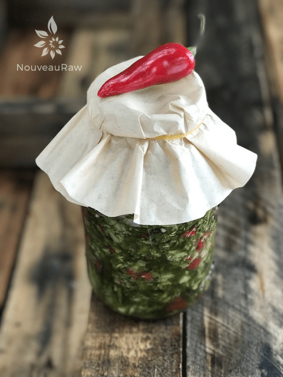

Fermented Mixed Pepper Salsa
~ raw, vegan, gluten-free, nut-free, fermented ~
When I ferment veggies, I don’t use whey. The salt used in the recipes, mixed with the natural lactic acid bacteria found in the air and on the veggies themselves are sufficient to complete the fermenting process.
If you choose to use a whey starter or any other type, be aware that they will speed up the fermentation process. Also, the warmer the room air, the quicker it will ferment, so please be aware and taste test at different stages.
There are several keys that cause fermentation in this recipe… The simple key to successful fermentation is to make sure your vegetables are submerged in liquid.Salt is optional but it is the way I like to ferment. Salt also discourages the growth of bacteria other than lactobacilli., and it hardens the pectins in the vegetables leaving them crunchy and enhancing the flavor.
By running the peppers through the food processor, (I like this texture for a salsa), it breaks down cell walls of the veggies/peppers which help to further release their natural juices, so no additional water is required. Just make sure that there is enough liquid to cover the veggies.
If you haven’t tried fermenting, I encourage you to give this recipe a try. It is very easy to do, it comes with amazing health benefits and you just might find a new, exciting way to enjoy salsa! By the way, you don’t have to use the chillies/peppers that I did, experiment make your own creation.
Types of Peppers
The poblano is a mild chili pepper. Dried, it is called a chile ancho (“wide chile”). The ripened red poblano is significantly hotter and more flavorful than the less ripe, green poblano. While poblanos tend to have a mild flavor, occasionally and unpredictably, they can have significant heat.
Fresno ChiliesIt is similar to the Jalapeño pepper but has thinner walls. The fruit starts out bright green changing to orange and red when fully matured. A mature Fresno pepper will be conical in shape, about 2 inches long, and 1 inch in diameter at the stem. Substitutes: jalapeno (not as hot).)
The Purple Jalapeno is a smaller ornamental version of the typical jalapeno pepper. The fruit of this pepper turns a beautiful shade of dark purple and stays that way for a long time before finally ripening to red. Purple Jalapenos are somewhat larger than regular Jalapenos, but with the same thick walls and fiery heat.
Hatch Chili PepperThe fruit looks long and curvy like Anaheim chili peppers, but they are firmer and have a greater range of flavor, usually mild to medium. They have a wonderful smell in their raw state.
The Santa Fe Grande also known as “Yellow hot chili pepper” and the “Guero chili pepper”. The conical, blunt fruits ripen from a pale yellow to a bright orange or fiery red. Santa Fe Grande’s have a slightly sweet taste and are fairly mild in heat.
Serrano Pepper is typically eaten raw and has a bright and biting flavor that is notably hotter than the jalapeño pepper. Serrano peppers are also commonly used in making pico de gallo, and salsa.
Yields 5 cups
- 1 lb + 13 oz peppers
- 1/3 cup raw apple cider vinegar
- 1 Tbsp Tamari, gluten-free
- 1 Tbsp raw agave nectar
- 4 cloves garlic
- 3 Tbsp dried oregano
- 1 Tbsp Himalayan pink salt
Preparation:
- Caution: Wear gloves when working with chilies, taking care not to touch your eyes, nose or other sensitive parts of your body.
- Wash the peppers, cut in half and remove the seeds.
- Rough chop the peppers and place in the food processor, fitted with the “S” blade.
- Add the vinegar, tamari, agave, garlic, oregano, and salt. Process until the desired texture is reached.
- Pour the salsa into mason jars and fill to about 1/2-1″ from the top.
- Do not ferment in metal bowls and I don’t recommend plastic containers due to possible leaching of chemicals.
- Place a coffee filter on top and secure with a rubber band.
- Tuck away out of direct sunlight for 24-72 hours, allowing it to ferment at room temp.
- Stop the fermenting process when you achieve the flavor that appeals to you.
- Once the fermenting is done, replace the coffee filter with a lid and store in the fridge for up to several months.
- A natural separation will occur; shake before each use.

Make a colorful section of peppers, just watch which ones are hot or not!

Place all the ingredients into a food processor or chop by hand.

Process until it reaches the desired texture for your salsa. Chunky or smooth, you decide.

Pack into a jar, leaving 1/2-1″ from the rim. With a spoon pack it in so the juices cover the surface.

Cover with a coffee filter and secure with a rubber band. Let it sit at room temp until the right amount of fermentation has taken place.
© AmieSue.com